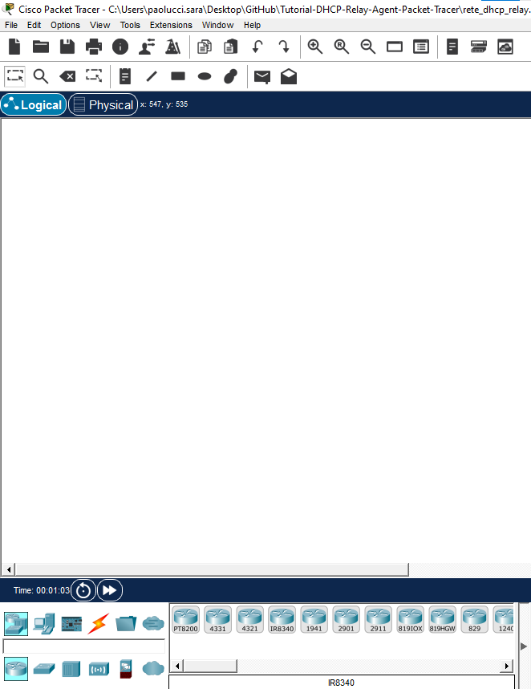

Obiettivi & Prerequisiti
Al termine di questo tutorial sarai in grado di:
- Progettare e costruire una topologia a due reti in Packet Tracer con router, switch e PC.
- Configurare un server DHCP che assegni indirizzi dinamici a tutti i client della rete.
- Configurare le interfacce del router Cisco 2911 con indirizzamento IPv4.
- Abilitare il DHCP relay (
ip helper-address) per far raggiungere il DHCP server ai client di una subnet remota. - Verificare la corretta assegnazione degli indirizzi con strumenti come
ipconfigeping.
Prerequisiti
Prima di iniziare assicurati di conoscere i seguenti concetti:
- Fondamenti del modello TCP/IP e indirizzi IPv4 con notazione CIDR.
- Concetto di subnet, indirizzo di rete e broadcast.
- Funzionamento del protocollo DHCP (DORA: Discover, Offer, Request, Acknowledge).
- Interfaccia base di Cisco Packet Tracer (aggiunta dispositivi, cablaggio, CLI).
Topologia di rete
La rete da realizzare è composta da due subnet separate e connesse da un unico router. Il server DHCP si trova sulla Rete 1 e serve dinamicamente i client di entrambe le reti grazie al relay configurato sull'interfaccia del router verso la Rete 2.
Piano di indirizzamento
| Dispositivo | Interfaccia | Indirizzo IP | Subnet Mask | Gateway |
|---|---|---|---|---|
| DHCP Server | FastEthernet0 | 192.168.10.2 |
255.255.255.0 |
192.168.10.1 |
| Router 2911 | GigabitEthernet0/0 | 192.168.10.1 |
255.255.255.0 |
— |
| Router 2911 | GigabitEthernet0/1 | 192.168.20.1 |
255.255.255.0 |
— |
| PC-1, PC-2 | FastEthernet0 | Dinamico DHCP | 255.255.255.0 |
192.168.10.1 |
| PC-3, PC-4 | FastEthernet0 | Dinamico DHCP | 255.255.255.0 |
192.168.20.1 |
Scope DHCP
| Parametro | Valore |
|---|---|
| Pool Name | POOL_LAN |
| Start Address | 192.168.10.16 |
| Max. Indirizzi | 16 (fino a 192.168.10.31) |
| Subnet Mask | 255.255.255.0 |
| Default Gateway Rete 1 | 192.168.10.1 |
| Default Gateway Rete 2 | 192.168.20.1 |
192.168.10.1 (gateway router) e 192.168.10.2 (server DHCP) si trovano fuori dallo scope (.16 – .31), quindi non vengono assegnati dinamicamente. Non è necessario configurare esclusioni manuali.
Creazione del progetto in Packet Tracer
- Avvia Cisco Packet Tracer. Nella schermata iniziale clicca su File → New (o premi
Ctrl+N) per creare un nuovo progetto vuoto. - Vai su File → Save As e salva il file con un nome significativo, ad esempio
rete_dhcp_relay.pkt, in una cartella dedicata al tuo lavoro. - Verifica che la modalità attiva sia Realtime Mode (in basso a destra, l'icona con l'orologio verde). Non usare la Simulation Mode in questa fase.

Aggiunta dei dispositivi al workspace
Tutti i dispositivi si trovano nella barra in basso di Packet Tracer, suddivisi per categoria. Trascina ciascun dispositivo nell'area di lavoro posizionandolo in modo da rispettare la topologia mostrata nella sezione 01.
Dispositivi da aggiungere
| Dispositivo | Categoria PT | Modello | Quantità |
|---|---|---|---|
| Router | Network Devices → Routers | 2911 | 1 |
| Switch | Network Devices → Switches | 2960 (o generico) | 2 |
| PC | End Devices → End Devices | PC generico | 4 |
| Server DHCP | End Devices → End Devices | Server generico | 1 |
- Seleziona la categoria Routers nella barra in basso a sinistra, poi trascina un 2911 al centro del workspace.
- Seleziona la categoria Switches e trascina due switch: posiziona Switch 1 a sinistra del router e Switch 2 a destra.
- Seleziona End Devices e trascina 4 PC: 2 collegati logicamente alla Rete 1 (sinistra) e 2 alla Rete 2 (destra).
- Sempre da End Devices trascina un Server e posizionalo vicino allo Switch 1 (Rete 1).
- Rinomina i dispositivi facendo doppio clic sull'etichetta: usa i nomi Router0, Switch1, Switch2, PC-1, PC-2, PC-3, PC-4, DHCP-Server.
Cablaggio della rete
Per collegare i dispositivi usa il tipo di cavo corretto. In Packet Tracer seleziona il cavo dalla barra in basso (icona del fulmine/cavo), poi clicca sul primo dispositivo scegliendo la porta e poi sul secondo.
Connessioni da effettuare
| Da | Porta | A | Porta |
|---|---|---|---|
| DHCP-Server | FastEthernet0 | Switch 1 | FastEthernet0/1 |
| PC-1 | FastEthernet0 | Switch 1 | FastEthernet0/2 |
| PC-2 | FastEthernet0 | Switch 1 | FastEthernet0/3 |
| Switch 1 | GigabitEthernet0/1 | Router0 | GigabitEthernet0/0 |
| Router0 | GigabitEthernet0/1 | Switch 2 | GigabitEthernet0/1 |
| PC-3 | FastEthernet0 | Switch 2 | FastEthernet0/1 |
| PC-4 | FastEthernet0 | Switch 2 | FastEthernet0/2 |
- Clicca sull'icona del cavo (fulmine) nella barra inferiore e seleziona Copper Straight-Through.
- Clicca sul DHCP-Server, scegli la porta
FastEthernet0, poi clicca su Switch 1 e selezionaFastEthernet0/1. - Ripeti per tutti i collegamenti elencati nella tabella sopra.
- Verifica che i pallini sulle porte diventino verdi. Se rimangono arancioni, attendi qualche secondo; se rimangono rossi controlla il tipo di cavo o la porta selezionata.
Configurazione del Server DHCP
Il server DHCP ha due compiti: possedere un IP statico e distribuire indirizzi dinamici ai client di entrambe le reti. In Packet Tracer il server si configura attraverso la GUI grafica.
5.1 – Assegnazione IP statico al server
- Fai doppio clic su DHCP-Server per aprire la finestra di configurazione.
- Vai nella scheda Desktop → IP Configuration.
- Seleziona Static e inserisci i seguenti valori:
| Campo | Valore da inserire |
|---|---|
| IP Address | [ 192.168.10.2 ] |
| Subnet Mask | [ 255.255.255.0 ] |
| Default Gateway | [ 192.168.10.1 ] |
5.2 – Configurazione del servizio DHCP
- Nella stessa finestra del server, clicca sulla scheda Services → DHCP.
- Assicurati che il servizio sia On (pulsante verde in alto).
- Compila il primo pool di indirizzi con i seguenti valori e clicca su Add (o Save):
| Campo | Valore da inserire |
|---|---|
| Pool Name | POOL_RETE1 |
| Default Gateway | [ 192.168.10.1 ] |
| DNS Server | [ lasciare vuoto o 0.0.0.0 ] |
| Start IP Address | [ 192.168.10.16 ] |
| Subnet Mask | [ 255.255.255.0 ] |
| Maximum number of Users | [ 16 ] |
- Clicca Add per salvare il pool
POOL_RETE1. - Aggiungi un secondo pool per la Rete 2: clicca ancora su Add (o ripeti il procedimento). Compila il secondo pool:
| Campo | Valore da inserire |
|---|---|
| Pool Name | POOL_RETE2 |
| Default Gateway | [ 192.168.20.1 ] |
| Start IP Address | [ 192.168.20.16 ] |
| Subnet Mask | [ 255.255.255.0 ] |
| Maximum number of Users | [ 16 ] |
Configurazione del Router 2911
Il router è il cuore della topologia: instrada il traffico tra le due reti e, grazie al comando ip helper-address, inoltrerà i broadcast DHCP provenienti dalla Rete 2 verso il server DHCP nella Rete 1.
no shutdown.
6.1 – Accesso alla CLI del router
- Fai doppio clic sul router nel workspace.
- Clicca sulla scheda CLI. Se compare il messaggio "Would you like to enter the initial configuration dialog?", rispondi no e premi Invio.
- Premi Invio per accedere al prompt
>(user EXEC mode).
6.2 – Configurazione interfaccia GigabitEthernet0/0 (Rete 1)
! Accede alla modalità privilegiata Router> enable Router# configure terminal Router(config)# interface GigabitEthernet0/0 Router(config-if)# description Connessione a Rete 1 - 192.168.10.0/24 Router(config-if)# ip address [ INSERIRE: 192.168.10.1 ] [ INSERIRE: 255.255.255.0 ] Router(config-if)# no shutdown ! Deve comparire: %LINK-5-CHANGED: Interface GigabitEthernet0/0, changed state to up Router(config-if)# exit
6.3 – Configurazione interfaccia GigabitEthernet0/1 (Rete 2)
Router(config)# interface GigabitEthernet0/1 Router(config-if)# description Connessione a Rete 2 - 192.168.20.0/24 Router(config-if)# ip address [ INSERIRE: 192.168.20.1 ] [ INSERIRE: 255.255.255.0 ] Router(config-if)# no shutdown ! Deve comparire: %LINK-5-CHANGED: Interface GigabitEthernet0/1, changed state to up Router(config-if)# exit
6.4 – Salvataggio della configurazione
Router(config)# end Router# write memory ! oppure: copy running-config startup-config ! Deve comparire: Building configuration... [OK]
Abilitazione del DHCP Relay (ip helper-address)
Normalmente un router blocca i pacchetti broadcast, tra cui le richieste DHCP Discover inviate dai client (destinazione 255.255.255.255). Il comando ip helper-address dice al router di intercettare quei broadcast sull'interfaccia specificata e di inoltrarli come unicast verso l'indirizzo del server DHCP.
Router# configure terminal Router(config)# interface GigabitEthernet0/1 Router(config-if)# ip helper-address [ INSERIRE: 192.168.10.2 ] ! L'indirizzo è quello del DHCP Server nella Rete 1 Router(config-if)# end Router# write memory
192.168.20.1), destinazione = IP del server DHCP (192.168.10.2). Il server risponde al router, che poi smista la risposta al client corretto. Il server capisce a quale pool appartiene la richiesta grazie al campo relay agent IP address nel pacchetto.
Verifica rapida della configurazione router
Router# show ip interface brief ! Output atteso: ! GigabitEthernet0/0 192.168.10.1 YES manual up up ! GigabitEthernet0/1 192.168.20.1 YES manual up up
Configurazione PC della Rete 1 (PC-1 e PC-2)
I PC della Rete 1 devono essere impostati su DHCP per ricevere automaticamente l'indirizzo IP dal server.
- Fai doppio clic su PC-1 per aprirne le proprietà.
- Vai nella scheda Desktop → IP Configuration.
- Seleziona l'opzione DHCP (il radio button in alto).
- Attendi qualche secondo: Packet Tracer simulerà il processo DORA. Vedrai comparire un IP nel range
192.168.10.16–192.168.10.31, la subnet mask255.255.255.0e il gateway192.168.10.1. - Ripeti gli stessi passi per PC-2.
Configurazione PC della Rete 2 (PC-3 e PC-4)
La configurazione è identica a quella dei PC della Rete 1. La differenza è che questi PC riceveranno un indirizzo dalla subnet 192.168.20.0/24 grazie al relay configurato sul router.
- Fai doppio clic su PC-3.
- Vai in Desktop → IP Configuration e seleziona DHCP.
- Attendi l'assegnazione: il PC riceverà un IP nel range
192.168.20.16–192.168.20.31, subnet mask255.255.255.0, gateway192.168.20.1. - Ripeti per PC-4.
ip helper-address, lo incapsula in un pacchetto unicast verso 192.168.10.2. Il server DHCP riceve la richiesta, guarda il campo giaddr (192.168.20.1), seleziona il POOL_RETE2 e risponde con un indirizzo della Rete 2. Il router riceve la risposta e la inoltra a PC-3.
Test e verifica della rete
Questa fase è cruciale: non basta configurare, occorre verificare che tutto funzioni correttamente. Esegui tutti i test seguenti.
Test A – Verifica assegnazione IP con ipconfig
- Apri il PC-1 → Desktop → Command Prompt.
- Digita
ipconfige premi Invio. - Verifica che compaia: IP
192.168.10.16(o successivo), Mask255.255.255.0, Gateway192.168.10.1. - Ripeti per PC-2, PC-3 e PC-4. I PC sulla Rete 2 devono avere IP nella subnet
192.168.20.x.
Test B – Ping al gateway
- Dal Command Prompt di PC-1, digita:
ping 192.168.10.1 - Devono arrivare 4 risposte con
Reply from 192.168.10.1. - Dal Command Prompt di PC-3, digita:
ping 192.168.20.1 - Stesso risultato atteso.
Test C – Ping cross-subnet (PC-1 → PC-3)
- Dal Command Prompt di PC-1, digita:
ping 192.168.20.16(o l'IP effettivo di PC-3). - Devono arrivare 4 risposte: questo conferma che il router instrada correttamente il traffico tra le due subnet.
Test D – Ping al DHCP Server
- Dal Command Prompt di PC-3 (Rete 2), digita:
ping 192.168.10.2 - Il ping deve avere successo: conferma che il server DHCP è raggiungibile anche dalla Rete 2.
Test E – Verifica con Simulation Mode
- Imposta uno dei PC della Rete 2 su Static IP (libera un indirizzo del pool) poi rimettilo su DHCP.
- Attiva la Simulation Mode (in basso a destra, icona del cronometro).
- Filtra per mostrare solo i pacchetti DHCP e UDP.
- Premi Play e osserva il percorso dei pacchetti DORA attraverso il router verso il server.
Riepilogo dei test
| Test | Comando | Risultato atteso |
|---|---|---|
| IP PC-1/PC-2 | ipconfig | IP 192.168.10.16-31 |
| IP PC-3/PC-4 | ipconfig | IP 192.168.20.16-31 |
| Ping gateway R1 | ping 192.168.10.1 | 4 reply |
| Ping gateway R2 | ping 192.168.20.1 | 4 reply |
| Cross-subnet | ping <IP PC-3> da PC-1 | 4 reply |
| Raggiung. server | ping 192.168.10.2 da PC-3 | 4 reply |
Riepilogo e concetti chiave
Hai completato con successo la configurazione di una rete con DHCP centralizzato e relay inter-subnet. Ecco i punti principali da ricordare:
- Server DHCP con IP statico: il server stesso deve avere un indirizzo fisso e conoscere il proprio gateway per poter rispondere alle richieste smistate dal router.
- Due pool DHCP separati: ogni subnet necessita di un pool dedicato con il proprio gateway predefinito. Il server associa la richiesta al pool corretto tramite il campo
giaddrdella richiesta. - Interfacce router:
no shutdown: le interfacce Cisco sono spente di default; va sempre abilitata manualmente conno shutdown. - DHCP Relay (
ip helper-address): il comando si inserisce sull'interfaccia del router affacciata sulla rete senza server DHCP locale. Converte il broadcast DHCP in unicast verso il server. - Verifica sistematica: usare
ipconfig,pinge la Simulation Mode per confermare ogni singolo aspetto della configurazione.
Domande di verifica
- Perché il server DHCP non può avere un indirizzo assegnato dinamicamente dallo stesso pool che gestisce?
- Cosa accadrebbe se dimenticassimo di inserire
ip helper-addresssull'interfaccia G0/1 del router? - Qual è il significato del campo
giaddr(Gateway IP Address) nel pacchetto DHCP? - Potresti aggiungere una terza rete alla topologia senza aggiungere un secondo server DHCP? Come?
- Cosa cambia nel funzionamento del relay se lo scope DHCP non copre la subnet della Rete 2?